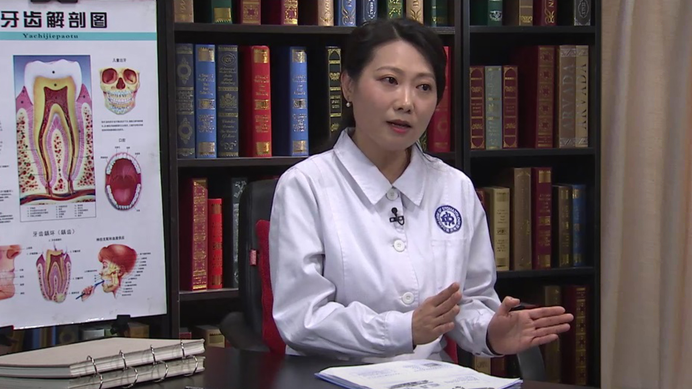

儿童看牙时行为管理¶
邹静 主任医师¶

四川大学华西口腔医院儿童口腔科主任 主任医师 博士生导师；
四川大学华西口腔医学院儿童口腔医学教研室主任；中华口腔医学会儿童口腔医学专业委员会副主任委员；四川省口腔医学会儿童口腔医学专业委员会主任委员；全球儿童口腔健康促进中国项目委员会委员。
主要成就： 承担过多项国际合作课题、自然科学基金及省部级科研课题，其中参研两项获得国家教育部科技进步一等奖，一项荣获中华医学科技奖二等奖，承担负责人一项荣获四川省科技进步三等奖，一项荣获成都市科技进步三等奖；发表70余篇核心期刊论文和多篇SCI论文，参编学术专著《儿童及妊娠期妇女口腔预防保健》《实用牙体牙髓病治疗学》《实用龋病学》《现代龋病学》《口腔微生态学》等。
专业特长： 擅长儿童龋病的综合防治，儿童咬合不正的早期治疗。
[toc]